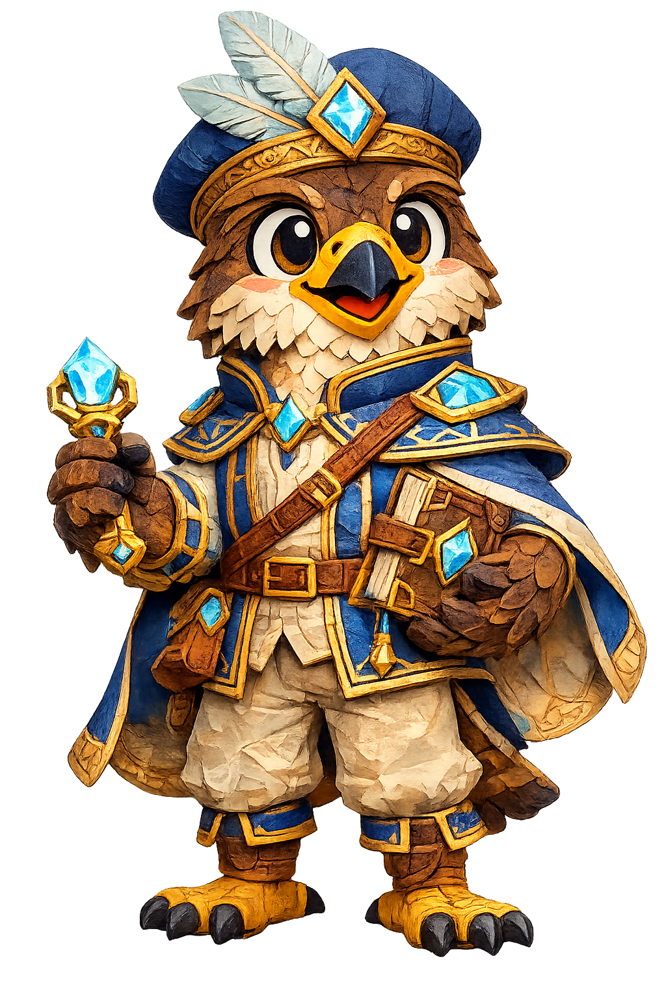

THE LEGEND OF
PRINSLOW
PRINSLOW
PALACE
High above the clouds, a glass palace waits for brave readers. Read the lost palace journal, unlock seven crystal keys, and search for the Topaz Falcon.

PALACE MAP
Welcome, explorer.
CHAPTER 1
Arrival Gate
THE FINAL CHAMBER
TOPAZ
TOPAZ
FALCON
The seven crystal keys rise into the air. The journal pages flutter open. The bronze bird folds its wings, and the glass doors reveal the Topaz Falcon glowing with golden light.
🏆 You are now a Keeper of Prinslow Palace.
Lost Journal Complete
🦅